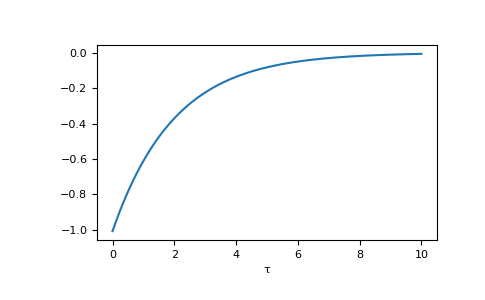

gftool.pole_gf_tau_b¶
-
gftool.pole_gf_tau_b(tau, poles, weights, beta)[source]¶ Bosonic imaginary time Green’s function given by a finite number of poles.
The bosonic Green’s function is given by G(tau) = -(1 + bose_fct(poles, beta))*exp(-poles*tau)
- Parameters
- tau(…) float array_like
Green’s function is evaluated at imaginary times tau. Only implemented for \(τ ∈ [0, β]\).
- poles, weights(…, N) float array_like
Position and weight of the poles. The real part of the poles needs to be positive poles.real > 0.
- betafloat
Inverse temperature
- Returns
- pole_gf_tau_b(…) float np.ndarray
Imaginary time Green’s function.
- Raises
- ValueError
If any poles.real <= 0.
See also
pole_gf_zcorresponding commutator Green’s function
Examples
>>> beta = 10 >>> tau = np.linspace(0, beta, num=1000) >>> gf_tau = gt.pole_gf_tau_b(tau, .5, 1., beta=beta)
The integrated imaginary time Green’s function gives -np.sum(weights/poles)
>>> np.trapz(gf_tau, x=tau) -2.0000041750107735
>>> import matplotlib.pyplot as plt >>> __ = plt.plot(tau, gf_tau) >>> __ = plt.xlabel('τ') >>> plt.show()

{kind=link}